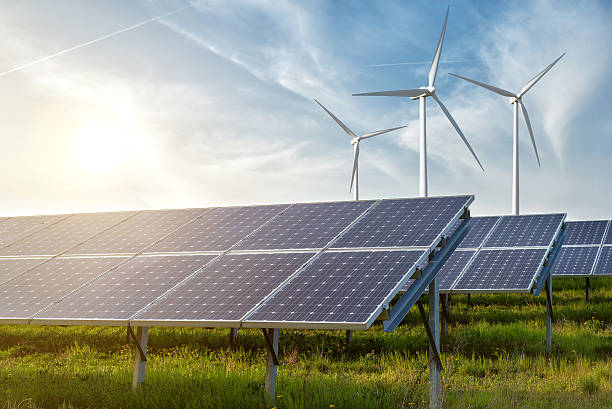

Aquí encontrarás noticias, artículos y consejos sobre energía renovable, eficiencia energética y sostenibilidad.
¿Qué es la energía renovable?

La energía renovable es la energía que proviene de fuentes naturales que se renuevan constantemente, como el sol, el viento, el agua y la biomasa. Es una alternativa limpia y sostenible a los combustibles fósiles.
Las ventajas de la energía renovable son:
- Es una fuente de energía limpia que no produce emisiones de carbono.
- Es una fuente de energía renovable que no se agota.
- Es una fuente de energía descentralizada que puede ser generada por pequeñas comunidades.
Consejos para ahorrar energía en tu hogar
Ahorrar energía en tu hogar no solo te ayudará a reducir tu factura de la luz, sino también a reducir tu huella de carbono.
Aquí hay algunos consejos para ahorrar energía en tu hogar:
- Apaga las luces y los aparatos electrónicos cuando no los estés usando.
- Lava la ropa con agua fría y sécala al aire libre.
- Instala bombillas LED en tu hogar.
- Aísla tu hogar para evitar la pérdida de calor en invierno y de frío en verano.